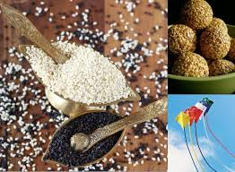
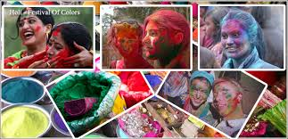
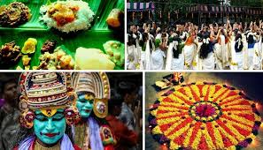
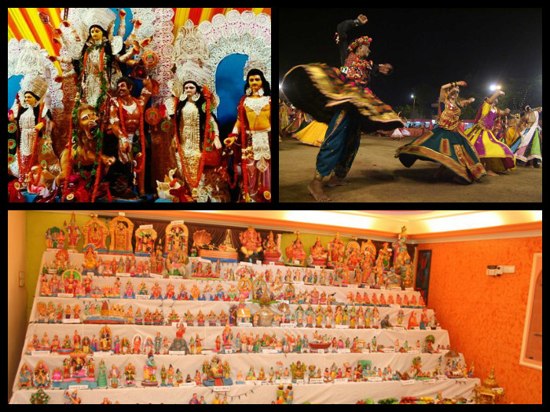
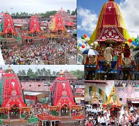
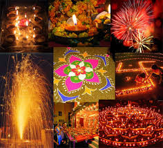
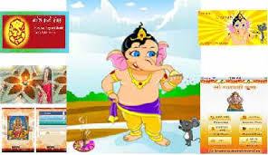
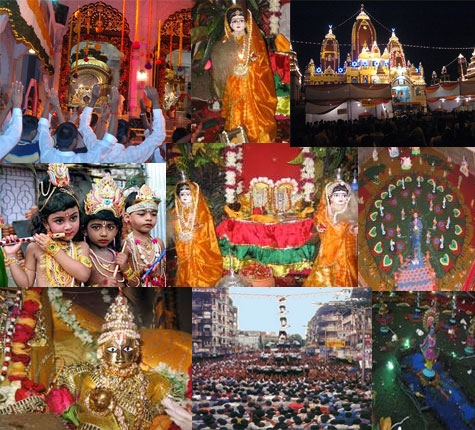

-
Makar Sankranti

Makara Sankranti festival coincides with the beginning of the sun's northward journey, and falls on January 14 according to the solar calendar.
According to legend, Bhishma, a great hero of the Mahabharata, though wounded mortally, waited for this auspicious time to give up his life.
For, it is believed that, a person dying on this day reaches the Abode of Light and Eternal Bliss.
In many states, the celebration has a special offering of rice and pulses cooked together with or without jaggery and clarified butter.
In many areas of India people distribute til-gud - the sesame seed and jaggery. The til brimming with fragrant and delicious oil, stands for
friendship and comradeship and jaggery for the sweetness of speech and behavior. In Tamil Nadu, Makara Sankranti is celebrated as Pongal,
a three-day harvest festival. On Bhogi Pongal, the house is cleaned and the discards are burnt, while children sing and dance around the bonfire.
On Surya Pongal, sweet Pongal is prepared and the Sun God is worshipped for a good yearly harvest. The last day of Pongal, Mattu Pongal, is celebrated to pay
respects to the cows, the animal that is used in cultivation.It is also known as Kite Festival. Kite flyers from all over the world participate in the festival.
-
Holi

The full-moon day in February-March is celebrated as Holi, the festival of colors. Holi is a festival of fun and
gaiety for people of all ages. Bonfires are lit and people smear colors on each other. Holi signifies the start of spring and end of winter.
People celebrate the new harvest and return of color in nature. Holi is a two day festival that also celebrates the victory of good over evil, as well as the abundance
of the spring harvest season. It's commonly referred to as the "Festival of Colors". People exuberantly throw
colored powder and water all over each other, have parties, and dance under water sprinklers.
Bhang (a paste made from cannabis plants) is also traditionally consumed during the celebrations.
Holi is a very carefree festival that's great fun to participate in if you don’t mind getting wet and dirty.
In the North, it is believed that a mighty King Hiranyakashipu ordered his people to worship him as a God.
But Prahlad, his only son, refused to accept his father as a God, because he believed only in Lord Vishnu.
The King tried to kill his son, but every time Prahlad was saved as he uttered the name of Vishnu. Finally,
Prahlad's aunt Holika, claiming herself to be fireproof, took the child in her lap and sat in the fire to burn him alive.
When the fire subsided, the king found, the child alive while Holika had perished.
-
Onam

Onam is the biggest and the most important festival of the state of Kerala. It is a harvest festival and is celebrated with
joy and enthusiasm all over the state by people of all communities. According to a popular legend, the festival is celebrated
to welcome King Mahabali, whose spirit is said to visit Kerala at the time of Onam.
Onam is a traditional ten day harvest festival that marks the homecoming of the mythical King Mahabali.
It’s a festival rich in culture and heritage. People strikingly decorate the ground in front of their houses
with flowers arranged in beautiful patterns to welcome the King. The festival is also celebrated with new clothes,
feasts served on banana leaves, dancing, sports, games, and snake boat races.
Rich cultural heritage of Kerala comes out in its best form and spirit during the ten day long festival.
It is indeed a treat to be a part of the grand carnival. People of Kerala make elaborate preparations to celebrate
it in the best possible manner. The most impressive part of Onam celebration is the grand feast called Onasadya,
prepared on Thiruonam. It is a nine course meal consisting of 11 to 13 essential dishes. Onasadya is served on banana
leaves and people sit on a mat laid on the floor to have the meal.
-
Navratri

The first nine days of this festival are known as Navaratri and are filled with dance in honor of the Mother Goddess Ambe or Durga.
The tenth day, called Dussehra, is devoted to celebrating the defeat of the demon king Ravana by Lord Rama. It also coincides
with the victory of the revered warrior Goddess Durga over the evil buffalo demon Mahishasura. In Western India this is the time
for the joyous Garba and Dandia dances and people pour out at night to participate in this community festival.
In eastern India, the festival is observed as Durga Puja. Huge statues of the Goddess are made and immersed in the holy Ganges River.
The festival is an extremely social and theatrical event, with drama, dance, and cultural performances held throughout the country.
Dussehra or Navratri is one of the most popular festivals of India. Dussehra is the anniversary of the victory of Goddess Durga over
the buffalo-headed demon, Mahishasura, giving the goddess her name Mahishasura-Mardini (the slayer of Mahishasura).
Dussehra also commemorates the victory of Lord Rama over Ravana of Lanka. The theme of this festival is the victory of good over evil.
-
Rath Yatra

The most awaited festival of Rath Yatra which is also known as Chariot Festival or Car festival, this is one
of the most awaited Hindu festivals of the state as well as the country. The celebration of this day starts much earlier that comprises
the construction and decoration of the Raths or Chariot by numerous devotees & volunteers. The three chariots that are the highlights of
the entire Yatra are pulled by strings. The chariot of Lord Jagannath which is 45.6 feet high, high comprises 18 wheels and is referred as Nandighosa.
Balabhadra’s chariot is made 45 feet high with 16 wheels is called Taladhvaja. The chariot of Subhadra known as Devadalana has 14 wheels and is 44.6 feet high.
All these chariots are decorated with various designs and colors by the artists of Puri that showcases their enthusiasm for the Yatra.
The famous festival that is celebrated usually in the month of June or July. The Chariots are then taken to the Shri Gundicha Temple to their aunt’s house
where the deities enjoy a nine days stay and are served with sweet pancakes.
The Rath Yatra at Puri is a significant event in the entire state that is witnessed by numerous tourists both foreigners and Indians. During the Rath Yatra,
Puri is colored in the most vivid hues of sheer joy & enjoyment and is flocked with devotees who wish to pay their honor to the deities and seek their blessings.
-
Diwali

Diwali is a five day festival that represents the start of the Hindu New Year. It's known as the "Festival of Lights" for all the fireworks, small clay lamps,
and candles that are lit during the celebrations. These lights are said to represent the victory of good over evil, and brightness over darkness.
The candlelight makes Diwali a very warm and atmospheric festival, and it's observed with much joy and happiness.
Diwali is basically the equivalent of Christmas — a big, festive celebration that brings families together
and is the highlight of the holiday season. There are five days of festivities, each marked with different pujas (prayers) and rituals.
For Hindus this is one of the most important days of the year, and it involves spending time with family and performing traditional activities.
Families clean their homes from top to bottom so that when the lamps are lit it will be suitable for the Goddess of wealth and knowledge, Lakshmi,
to enter their home and bless them with good fortune for the upcoming year, as well as the God of good luck, Ganesh. Traditional families will make an offering
to the goddess of fruit, rice pudding, flowers and other assorted gifts. On Diwali you make offerings to Lakshmi and Ganesh for wealth and good luck .
Some families exchange gifts and make a big dinner for family and friends.
-
Ganesh Puja

Ganesh Chaturthi (also known as Vināyaka Caturthi, Gaṇēśa Caturthī or Vināyaka Cavithi) is the Hindu Festival celebrated in honour
the spectacular eleven day celebration of the beloved Hindu elephant-headed god, Lord Ganesha.
The start of the festival sees huge, elaborately crafted statutes of Ganesha installed in homes and podiums, which have been
especially constructed and beautifully decorated. At the end of the festival, the statutes are paraded through the streets,
accompanied by much singing and dancing, and then submerged in the ocean.
Ganesha is known by 108 different names and is the Lord of arts and sciences and the deva of wisdom. He is honoured at the start of
rituals and ceremonies as he's considered the God of beginnings. He's widely and dearly referred to as Ganapati or Vinayaka
It is celebrated throughout India, particularly in Maharashtra, Gujarat, Karnataka, Telangana, Tamil Nadu, Kerala, Andhra Pradesh, Goa,
Odisha, Madhya Pradesh, Chhattisgarh and other parts of western and southern India. Abroad, Ganesh Chaturthi is observed in the Terai
region of Nepal and by the Hindu diaspora in the United States, Canada and Mauritius.
-
Krishna Janmashtami

Krishna Janmashtami, also known as Govinda, commemorates the birthday of Lord Krishna. An extremely fun part of the
festival involves people climbing on each other and forming a human pyramid to try and reach and break open clay pots
filled with curd, which have been strung up high from buildings.
The festival is celebrated on the eighth day (Ashtami) of the Krishna Paksha (dark fortnight) of the
month of Bhadrapad (August–September) in the Hindu calendar.Rasa lila, dramatic enactments of the life of Krishna,
are a special feature in regions of Mathura and Vrindavan, and regions following Vaishnavism in Manipur. While the
Rasa lila re-creates the flirtatious aspects of Krishna's youthful days, the Dahi Handi celebrate God's playful and
mischievous side, where teams of young men form human towers to reach a high-hanging pot of curd and break it.
This tradition, also known as uriadi, is a major event in Tamil Nadu on Gokulashtami.
Krishna Janmashtami is followed by the festival Nandotsav, which celebrates the occasion when Nanda Baba distributed
gifts to the community in honour of the birth.